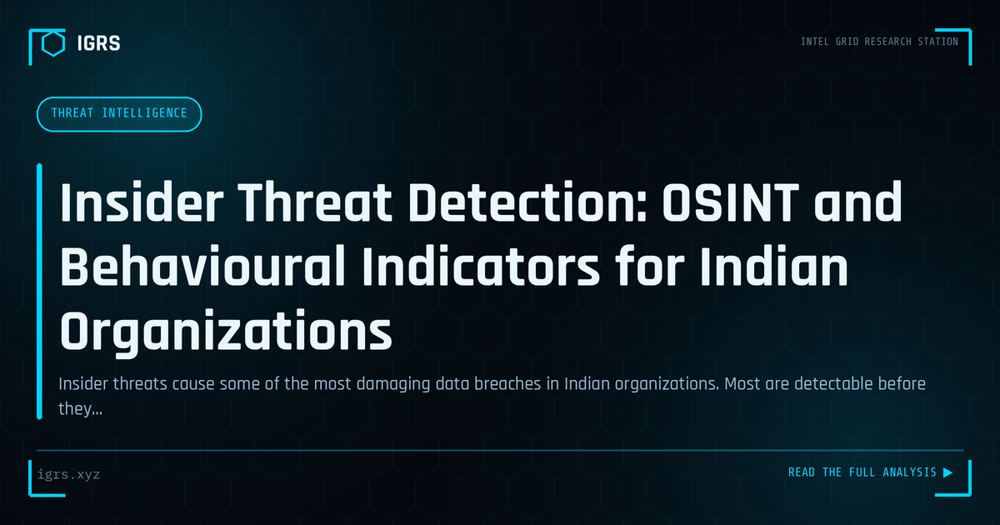

Insider Threat Detection: OSINT and Behavioural Indicators for Indian Organizations
| File No. | IGRS-028/2026 |
| Subject | Framework for identifying and investigating insider threat activity in Indian corporate and government environments |
| Category | Threat Intelligence |
| Author | Manuj Kumar Pandey |
| Published | 2026-05-14 |
| Reading time | 12 minutes |
Insider threats cause some of the most damaging data breaches in Indian organizations. Most are detectable before they cause maximum damage. The indicators and investigation methods.
Insider Threats: The Danger Within
While organisations focus heavily on external attackers, some of the most damaging breaches come from within — employees, contractors, or partners who misuse their authorised access. Insider threats are particularly dangerous because insiders already have legitimate access and knowledge of systems. Detecting and preventing them requires a different approach from external defence. This guide covers insider threat detection and prevention.
Types of Insider Threats
| Type | Description |
|---|---|
| Malicious insider | Deliberately harms the organisation |
| Negligent insider | Causes harm through carelessness |
| Compromised insider | Account hijacked by an external attacker |
| Third-party | Contractors or partners with access |
Why Insiders Are Dangerous
Insiders pose unique risks because they already have authorised access, understand the organisation's systems and data, know where valuable information resides, and can operate within normal patterns that evade external-focused defences. A malicious insider does not need to breach the perimeter — they are already inside. This makes detection harder and the potential damage greater, as insiders can target the most valuable assets directly.
Motivations Behind Insider Threats
Malicious insiders act for various reasons: financial gain (selling data or committing fraud), grievance (revenge against the employer), ideology, or coercion. Negligent insiders cause harm without intent — through carelessness, falling for phishing, or ignoring security policies. Understanding these motivations helps organisations identify risk factors and design appropriate detection and prevention measures.
Warning Signs
Insider threats often exhibit detectable indicators:
- Accessing data unrelated to their role
- Unusual access times, particularly off-hours
- Large data downloads or transfers
- Attempts to bypass security controls
- Use of unauthorised devices or services
- Behavioural changes, especially around departures or grievances
Detection Through Behaviour Analytics
User Behaviour Analytics (UBA) is central to insider threat detection. By establishing a baseline of normal behaviour for each user, UBA detects anomalies that may indicate a threat — unusual access patterns, abnormal data movement, or atypical activity. This behavioural approach catches insiders operating with legitimate credentials, where traditional signature-based detection fails because no malware or external intrusion is involved.
Data Loss Prevention
Data Loss Prevention (DLP) tools monitor and control data movement, detecting and preventing unauthorised transfer of sensitive information. DLP can flag or block large downloads, transfers to personal accounts or removable media, and movement of classified data. For insider threats focused on data theft, DLP provides both detection and prevention, monitoring the data movement that is often the insider's ultimate objective.
Privileged Access Monitoring
Privileged users — administrators with extensive access — pose elevated insider risk. Monitoring privileged access closely, recording privileged sessions, enforcing just-in-time access, and requiring approval for sensitive actions reduces this risk. Because privileged accounts can access the most valuable assets and potentially cover their tracks, special scrutiny of their activity is a critical insider threat control.
Prevention Strategies
| Strategy | Effect |
|---|---|
| Least privilege | Limits what insiders can access |
| Separation of duties | Prevents single-person abuse |
| Robust offboarding | Removes access promptly on departure |
| Background checks | Screens for risk factors |
| Security awareness | Reduces negligent insiders |
The Offboarding Risk
Employee departures are a high-risk period for insider threats, especially when departures are involuntary or acrimonious. Departing employees may attempt to take data or sabotage systems. Robust offboarding — promptly revoking all access, retrieving devices, monitoring for data exfiltration in the period before departure, and reviewing recent activity — is essential. Many insider incidents occur around departures, making this process a critical control.
Legal Framework in India
Insider threats involving data theft attract IT Act provisions including Section 43 (unauthorised access and data theft), Section 66 (computer offences), and Section 72 (breach of confidentiality). The DPDP Act 2026 adds obligations and liability for failing to protect personal data. Employment contracts and confidentiality agreements provide additional legal recourse. For prosecution, forensic evidence of the insider's actions, properly preserved and certified, is essential.
Building an Insider Threat Programme
An effective insider threat programme combines technical controls (UBA, DLP, privileged access monitoring), process controls (least privilege, separation of duties, robust offboarding), and cultural elements (security awareness, a healthy environment that reduces grievances, and channels to report concerns). For Indian organisations, balancing detection with employee privacy and trust is important — the goal is protecting the organisation while maintaining a positive culture. A thoughtful, balanced programme addresses one of the most challenging and damaging categories of cyber threat.